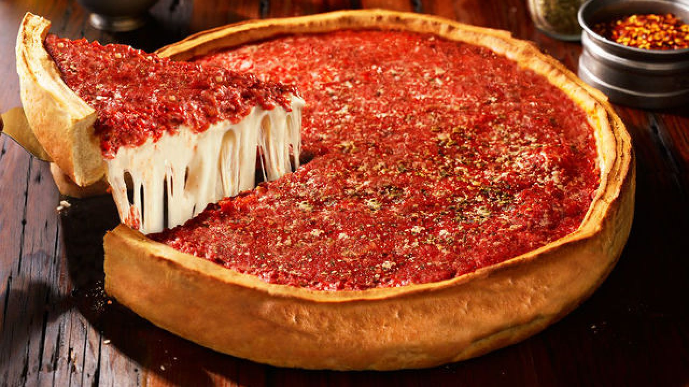

Pizza Tracking
Media Page
Pizza Likes
Brick Oven Pizza: 0
Calzone Pizza : 0
Chicago Pizza : 0
Oven Grinder Pizza : 0
Thin Crust Pizza : 0
New York Style : 0
Detroit Style Pizza : 0
Shot Gun Dans Pizza : 0
Pizza Pictures
What is your favorite Pizza?

Vote Five Times.
Click to See Results List
Click to See Chart Results